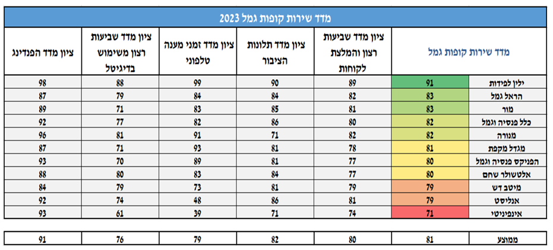
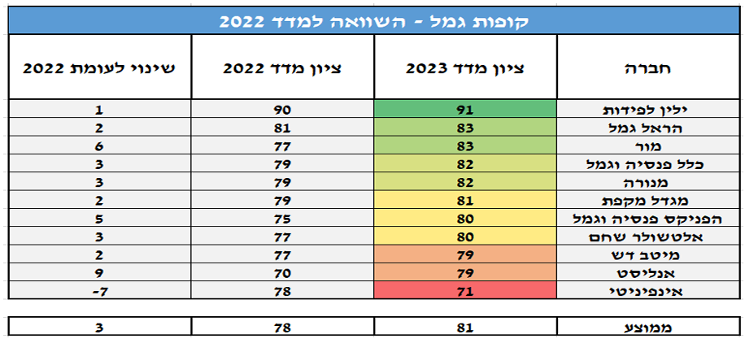

מדד השירות בחיסכון הפנסיוני
מדד שירות חיסכון פנסיוני עודכן השנה, ולמדד נוסף רכיב שיוך כספים המהווה 10% מהמדד. המדד מורכב מחמישה רכיבים:
- שביעות רצון והמלצת לקוחות (55% מהציון) – מידת שביעות הרצון של לקוחות שפנו לגוף המוסדי.
- תלונות ציבור (20% הציון) – משקף את כמות הפניות שנפתחו נגד הגוף המוסדי וכמות הפניות שבגינן התקבל סעד לפונה.
- זמני מענה טלפוני (10% מהציון) – מהירות מענה טלפוני למוקדי השירות של הגוף המוסדי.
- מדד שיוך כספים (10% מהציון) – מהירות שיוך כספים לחשבונות העמיתים והמבוטחים.
- שביעות רצון משימוש דיגיטלי (5% מהציון) – מידת שביעות הרצון של לקוחות שהשתמשו בכלים הדיגיטליים של הגוף המוסדי.
להלן ציוני מדד השירות ונתוני השוואה לשנה קודמת כפי שפורסמו על ידי רשות שוק ההון:
 